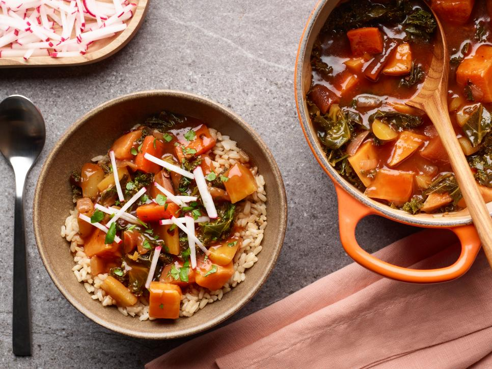

Braised Chipotle Sweet Potatoes

Description
This super-easy weeknight dinner shows once and for all that braising isn't just for meat! Spicy, tender sweet potatoes simmer in a delicious sauce with stewed carrot pieces and slightly crisp kale. Perfect for vegans and carnivores alike, it's served with a sprinkle of crisp radish sticks and cilantro for a fresh finish.
Ingredients
- 1 teaspoon cumin seeds
- 1 tablespoon extra-virgin olive oil
- 2 large rainbow carrots, cut into 1-inch half-moons
- 1 large yellow onion, diced
- 2 large sweet potatoes (about 2 pounds), cut into 1-inch pieces
- Kosher salt
- 6 cups kale (about 1 pound), woody ends discarded, leaves and stems chopped
- Juice of 1 navel orange (about 1/3 cup)
- 1 tablespoon tomato paste
- 1 tablespoon dark brown sugar
- 1 chipotle pepper in adobo, seeded and chopped, plus 1 tablespoon adobo sauce, optional
- 1 1/2 cups vegetable broth
- 2 cups cooked brown rice, for serving, optional
- 2 radishes, cut into thin matchsticks
- 1/4 cup fresh cilantro, chopped
Directions
- Arrange an oven rack in the lower third of the oven and preheat to 350 degrees F.
- Heat a large braiser or Dutch oven over medium heat. Add the cumin seeds and toast, stirring occasionally, until very fragrant, about 1 minute. Add the olive oil, carrots and onions and cook, stirring frequently, until the carrots soften and the onions start to become translucent, 3 to 4 minutes. Add the sweet potatoes and 1 teaspoon salt and toss together so that everything is coated with the oil and seeds. Cook until the sweet potatoes start to soften slightly on the edges, about 5 minutes.
- Stir in the kale and 1 teaspoon salt and let wilt slightly, another 2 minutes. While the kale is cooking, stir the orange juice, tomato paste, brown sugar and chipotle into the vegetable broth. Add the adobo sauce, if using. Pour the mixture into the pot. Stir and toss all the vegetables with the broth mixture and bring the mixture to a boil. Taste for seasoning and add more salt if desired.
- Cover with a lid and bake 30 minutes. Remove the lid, stir and bake, uncovered, until the potatoes are very tender and saucy, about 30 minutes more. Serve on a bed of brown rice if desired, topped with radish and cilantro.